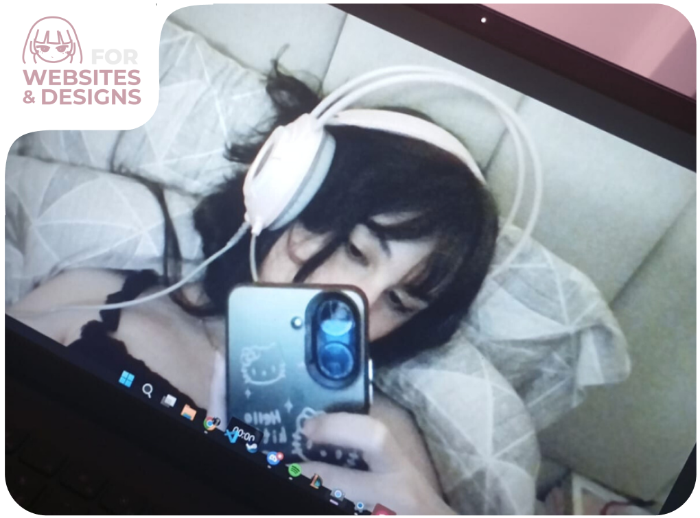
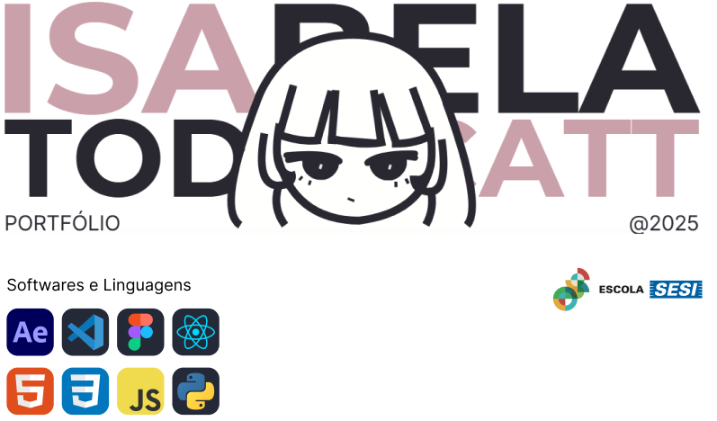
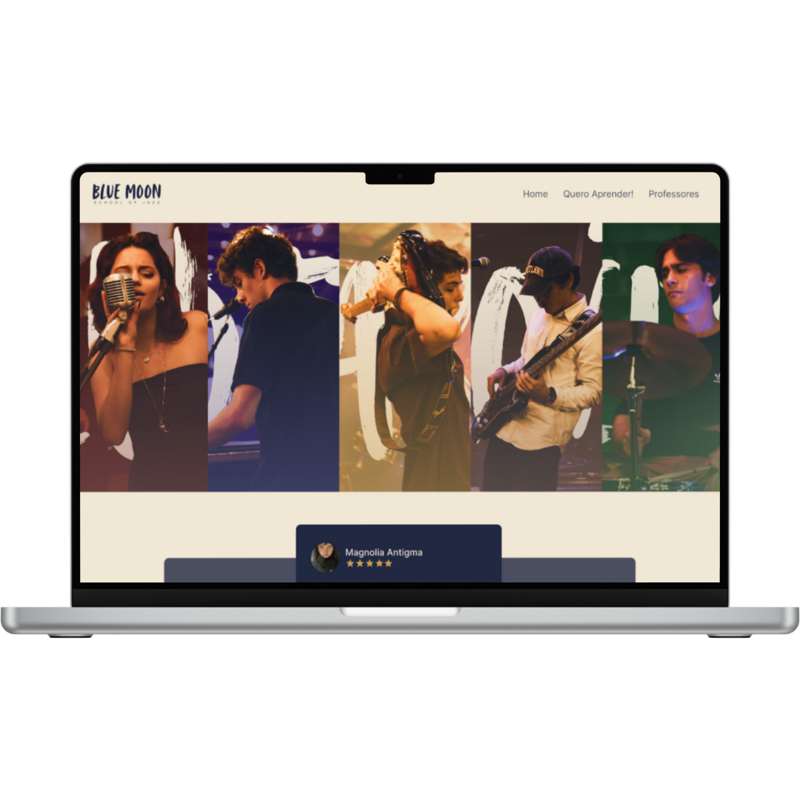
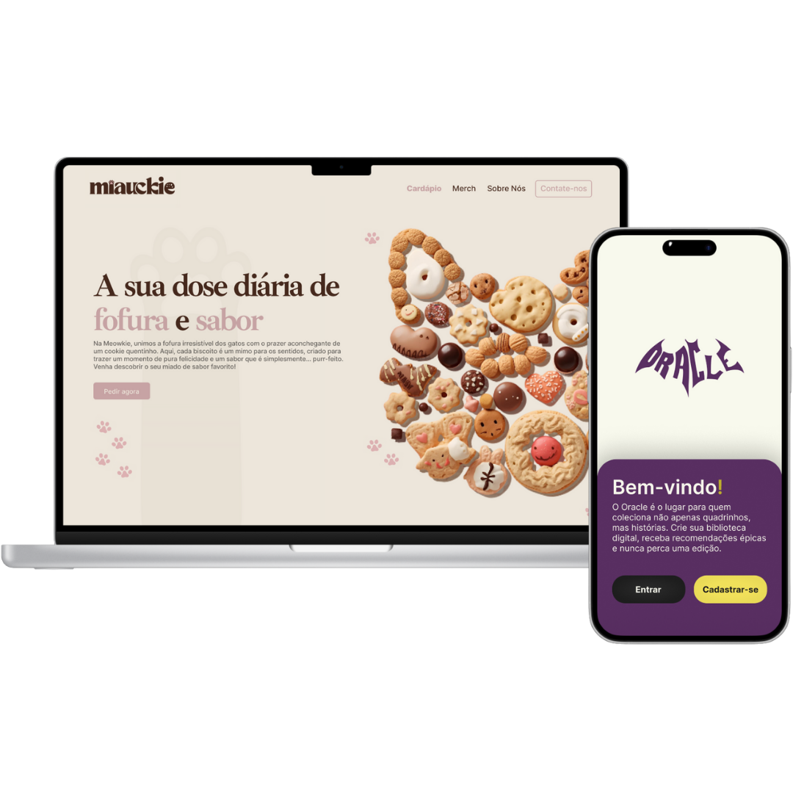
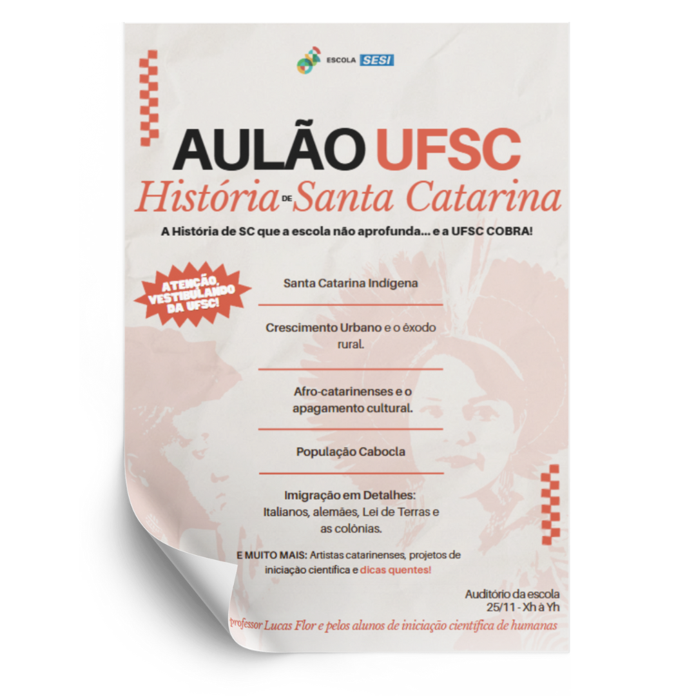
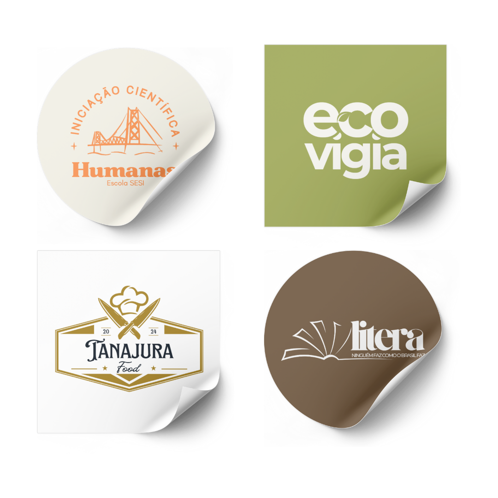
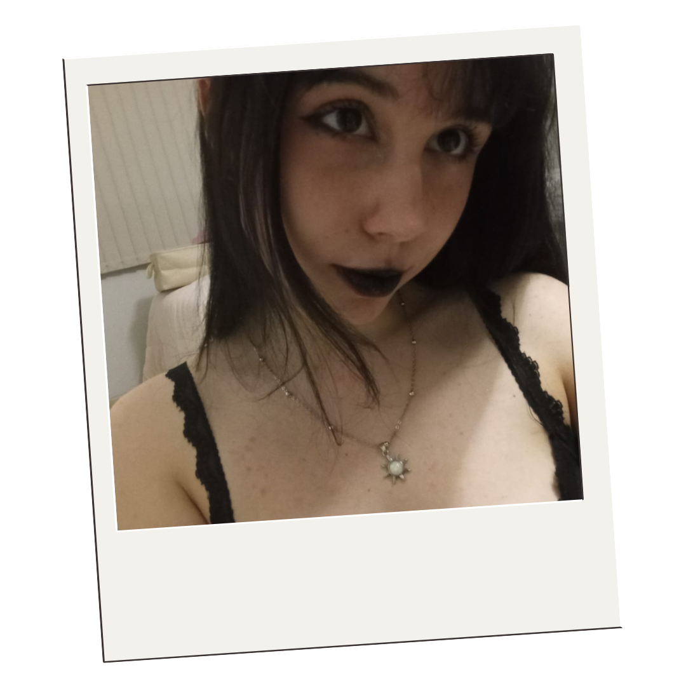

Me chamo Isabela, tenho dezessete anos e nasci em Florianópolis, a capital de Santa Catarina. Sou uma pessoa tranquila, mas movida a metas — sempre em busca dos meus objetivos e do crescimento ao longo da minha jornada. Amo arte em todas as suas formas: música, pintura, fotografia... Sou fascinada por livros de diversos gêneros, filmes, jogos e edição. Valorizo muito as pessoas ao meu redor e me esforço para cultivar relações verdadeiras. Para mim, estar presente e fortalecer laços é essencial — afinal, bons relacionamentos são feitos de cuidado e reciprocidade. Além dos meus hobbies, estou focada no autodesenvolvimento. Acredito que minha futura profissão possa ir além dos códigos: pretendo criar soluções que facilitem a vida das pessoas ou até mesmo enfrentem desafios sociais. A tecnologia, pra mim, é uma grande ferramenta para mudanças positivas.

Isabela dos Santos Todescatt Portfolio @2025